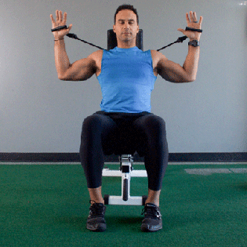
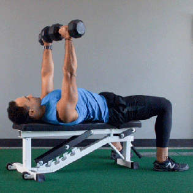
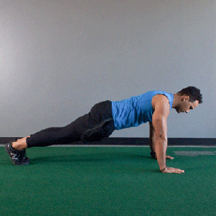
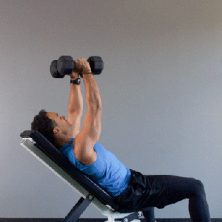

Position yourself on the bench with your feet firmly on the ground and your back flat (the bar should be directly over your eyes, and your head, shoulders, and buttocks should be on the bench).
Grasp the barbell with palms forward and thumbs wrapped around the bar. Move the bar into starting position, with help from a spotter if needed.
Position the bar over your chin or upper chest, keeping your elbows and wrists straight.
Inhale and lower the bar slowly until it touches your chest below your armpits. As you lower, flare your elbows out slightly.
Next, exhale and press the bar up, keeping your wrists straight and your back flat.

Pec deck
Keep your feet flat on the floor, at least shoulder-width apart.
With your back firmly against the seat, lift your arms until they reach shoulder level (the angle of your elbows should be between 75 and 90 degrees). Place your elbows on the center of the pad on the wings of the machine.
With smooth and slow movement, push the wings together, stopping just before they touch.
Reverse to the starting position slowly.

Chest Press
Adjust the chest press bench so that you sit with knees bent slightly and your feet on the floor.
Grasp the handles, and exhale as you push them away until your arms are straight out. Keep your elbows slightly bent.
As you inhale, pull the bars toward you slowly and with control, without letting the weights touch down.

Pushups
Tighten your abdominals, keep your back flat, your neck in alignment with your spine, and keep your elbows close to your sides.
With your hands directly under your shoulders, lower yourself slowly and with control.
Lastly, press up.

Inclined dumbbell flies
Take a dumbbell in each hand and lie on a bench, feet firmly on the floor.
Press your shoulders, back, head, and buttocks to the bench. Position the dumbbells near your chest and armpits with your palms facing inward. Keep your wrists straight.
Exhale, pull in your abs, and slowly press the dumbbells up directly above your chest. Your arms should be shoulder-width apart. Keep your elbows straight but not locked.
Inhale and lower the dumbbells slowly in a wide arc until they are level with your chest. Keep the dumbbells parallel.
“Fly” the dumbbells toward the ceiling in the same gentle arc.